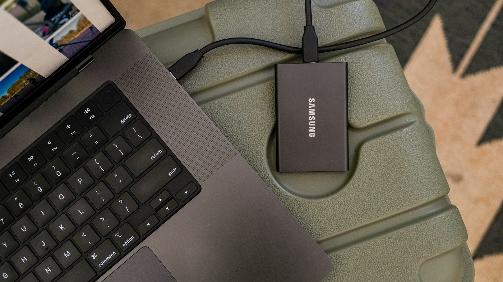

Ten years of photos. Several old phones. A camera roll that now contains family memories, forgotten memes, and six copies of the same sunset. Where do you even start?
Usually, not at the top of the gallery. Scrolling through every photo is an easy way to spend an hour reminiscing and finish with barely any storage freed. A better approach is to separate the easy decisions from the meaningful ones: clear obvious clutter first, then work through your memories in small batches.
Here's a practical way to do that on Android, and where Filtored can help.
Why an old gallery feels so hard to clean
A library carried across several phones isn't just a collection of pictures. It's also a history of transfers, downloads, messaging apps, and things you saved "just for now."
The same photo might have arrived more than once through an old backup. A full-resolution original might sit beside a compressed copy sent in a chat. Screenshots of directions, shopping lists, and booking confirmations can outlive their usefulness by years.
But age alone doesn't make a photo disposable. A blurry picture from 2016 might be the only one you have of someone important. The goal is to remove repetition and things you no longer need, not to make your gallery as small as possible.
1. Protect the photos you can't replace
Before a large cleanup, make a separate backup of the photos and videos you care about. That could be a computer, an external drive, or a backup service you trust. Open a few files from that backup to check that they actually copied.

If you use a cloud gallery, check how deletion works before you begin. A synced library is not necessarily an independent backup: deleting an item can also remove it from the cloud or other devices.
Filtored leaves deletion decisions to you; nothing is deleted until you review and confirm it. That still makes a backup worthwhile, especially when you're reviewing years of irreplaceable moments.
2. Give the initial scan time to work
Filtored runs its core AI processing on your Android device, organizing photos and identifying duplicate or similar images without uploading your library for normal use.
For a large collection, set aside time for the initial scan. Plug in your phone, grant access to the media you want to organize, and check the app's progress. An evening when you don't need your phone much is a sensible time to start.
Don't expect a decade of media to be ready instantly. Scan time depends on your device and library size. Let the scan progress before relying on its results as a view of the whole collection.
3. Start with duplicates, then review similar shots
Repeated copies are often the easiest decisions because you can remove clutter without losing a moment. Filtored's duplicate-photo tools help you review these copies; its similar-burst grouping helps with the ten slightly different shots you took to get one good picture.
Treat those as two different tasks. An identical copy is repetition. A similar photo may have a different expression, better focus, or someone who isn't in the other shot.
- Compare before deleting. Check sharpness, resolution, and whether a copy has an edit you want to keep.
- Keep the version you'll actually want later. That might be the original, an edited favorite, or both.
- Don't delete an entire old-phone folder just because it looks familiar. It may contain unique photos alongside the duplicates.
You don't need to choose one photo from every group. Keeping two genuinely different favorites is still a useful cleanup.
4. Clear expired screenshots and chat clutter
Next, look for pictures that once served a purpose but no longer do: an old delivery update, a parking reminder, a shopping comparison, or a meme you've forgotten you saved.
Filtored's old-screenshot cleanup tools give you a focused place to review screenshots. Its By Source view also helps you browse media from messaging and social apps rather than mixing those downloads with your camera photos.
Work through one category or source at a time. That makes the decision simpler: "Do I still need this?" rather than "Which part of my life should I sort out next?"
Be more careful with receipts, documents, and screenshots containing information you still need. Save that information somewhere appropriate before removing the image. And don't assume everything from a chat is junk: some of your best photos may have been sent by someone else.
5. Review large videos for a storage win
If your main problem is a nearly full phone, file size matters more than the number of items you delete. A handful of long, high-resolution videos can take up more space than hundreds of small images.
Filtored surfaces large videos so you can review the files using the most storage. Watch enough of each one to know what it contains before deciding. An accidental recording may be easy to remove; a shaky clip with a loved one's voice might be worth keeping forever.
If a video matters but doesn't need to stay on your phone, copy it to your chosen archive and verify that the copy plays before deleting the local version.
6. Tackle the memories one event at a time
Once the easy clutter is out of the way, stop thinking about the entire timeline. Filtored's Events view brings photos from the same occasion together, giving you a smaller, more coherent set to review.
"Review this weekend trip" is a manageable task. "Sort 30,000 photos" isn't.
Start with recent events while you still remember what happened, then move backward into older years and phone transfers. For each event, keep the photos that tell the story, remove obvious misses, and leave anything you're unsure about for later.
Give yourself a short session, perhaps ten minutes or one event, and stop there. Finishing a small batch is better than making rushed decisions because you're tired of looking at thumbnails.
The realistic impact of a 10-year clean
There isn't a useful universal percentage. A gallery full of copied backups will behave differently from one full of unique photos, and removing videos has a very different storage impact from removing screenshots.

Check your phone's storage before and after cleanup rather than judging progress only by the number of deleted items. If your gallery keeps deleted media in a trash or recycle bin, space may not be reclaimed until those files are permanently removed. Check how your app handles this, and only empty the bin once you're confident in your choices.
Keep the gallery useful, not perfect
After the big cleanup, a brief regular review is easier than another decade-long project. Clear temporary screenshots when they're no longer useful, review bursts after a trip, and check large videos when storage starts getting tight.
You don't need a perfectly curated camera roll. You need a gallery where the pictures you care about are easy to find, and the things you don't need aren't constantly in the way.
Make your first batch easier to find
Filtored brings duplicates, similar shots, old screenshots, large videos, and Events into one Android gallery, with core AI processing on your device. You review the suggestions and decide what stays.
Try Filtored on AndroidStill choosing a tool? Read our comparison of gallery and photo cleanup apps for Android.
Photos on Unsplash: photo pile by Jon Tyson, external drive by Samsung Memory US, concert by Noiseporn, and photo sorting by Vitaly Gariev.